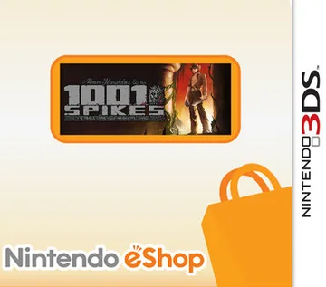

PIXELS · 3DS
1001 Spikes
Capa não disponível
1001 Spikes
1001 Spikes is a platform game developed by 8bits Fanatics and Nicalis, and published by Nicalis. Originally named Aban Hawkins & the 1000 Spikes, the game's objective is to escape a vast terrain and struggle to reach victory without being impaled by spikes and many other disasters. Throughout the multiple travels, the game gets increasingly challenging, especially having to dodge falling stones and much more.